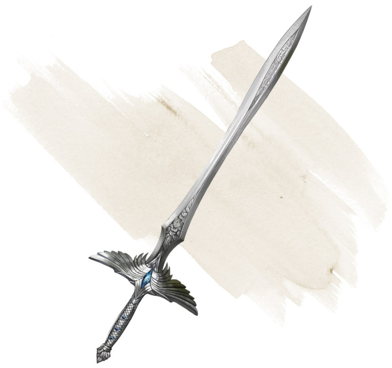

Vengeresse sacrée
[ Holy Avenger ]
Arme (toute épée), légendaire (nécessite un lien par un paladin)
Vous obtenez un bonus de +3 à l'attaque et aux dégâts réalisés avec cette arme magique. Lorsque vous touchez un fiélon ou un mort-vivant avec elle, cette créature subit 2d10 dégâts radiants supplémentaires.
Tant que vous tenez l'épée dégainée, elle crée une aura dans un rayon de 3 mètres autour de vous. Vous et toutes les créatures qui vous sont amicales dans l'aura ont un avantage aux jets de sauvegarde contre les sorts et autres effets magiques. Si vous avez 17 ou plus niveaux dans la classe de paladin, le rayon de l'aura augmente de 3 mètres.
Tant que vous tenez l'épée dégainée, elle crée une aura dans un rayon de 3 mètres autour de vous. Vous et toutes les créatures qui vous sont amicales dans l'aura ont un avantage aux jets de sauvegarde contre les sorts et autres effets magiques. Si vous avez 17 ou plus niveaux dans la classe de paladin, le rayon de l'aura augmente de 3 mètres.
Dungeon Master´s Guide (SRD)
